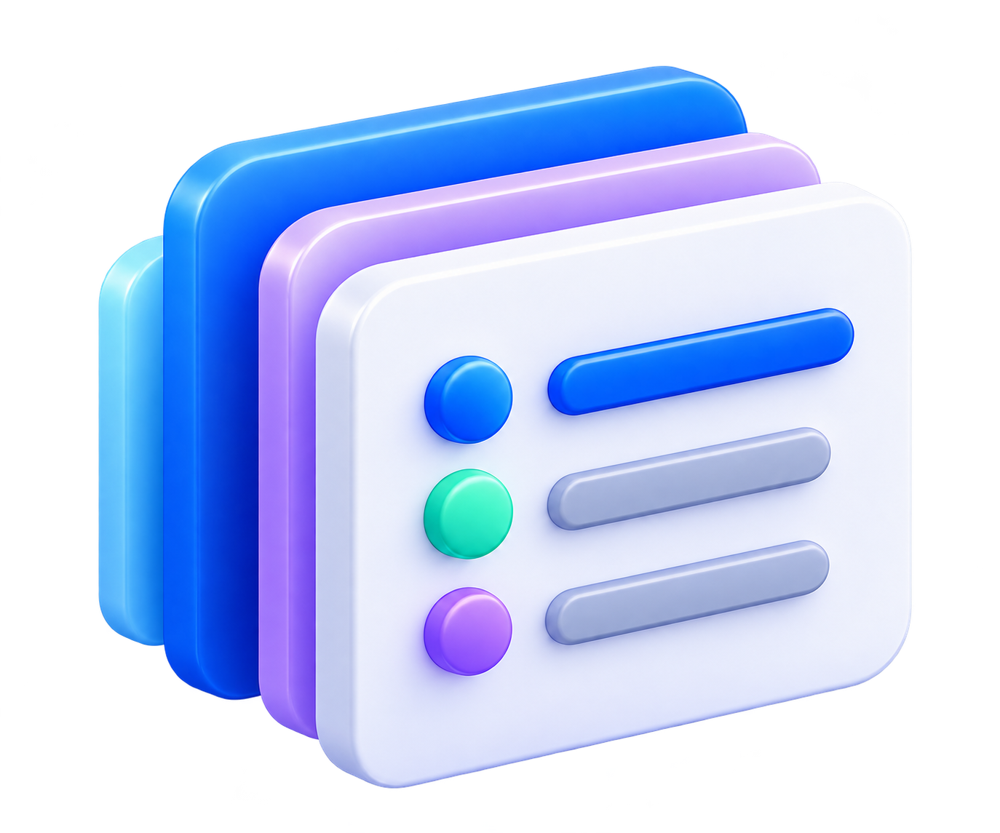

Everything has a place.
Bring programmes, cohorts, participants, trainers, and delivery details together in one operational picture.
STATUS In development
From coordinating people and sessions to tracking progress and reporting outcomes, Synqop helps your organisation manage its programmes in one place.
DESIGNED FOR THE PEOPLE WHO MAKE PROGRAMMES WORK.
A CLEARER WAY TO OPERATE
Synqop helps your organisation see what's happening and where attention is needed.
Bring programmes, cohorts, participants, trainers, and delivery details together in one operational picture.
See the signals behind a participant status, so teams can review context and decide what to do next.
Keep attendance, assignments, and participant progress easier to follow across your programmes.
Bring programme activity and progress into a clearer view to support organisational decisions.
THE PROGRAMME LOOP
Move from day-to-day delivery to a clearer understanding of what is happening and where support may help.

Organise programmes, cohorts, people, and planned activities.
Organise programmes, cohorts, people, and planned activities.
Keep sessions, attendance, and assignments in view as work happens.
Notice patterns and signals that may need a closer look.
Coordinate a considered follow-up with the right people.
Bring operational details together into useful summaries.
HELP SHAPE WHAT'S NEXT
Tell us a little about your organisation. We’d love to keep you in the loop as Synqop takes shape.